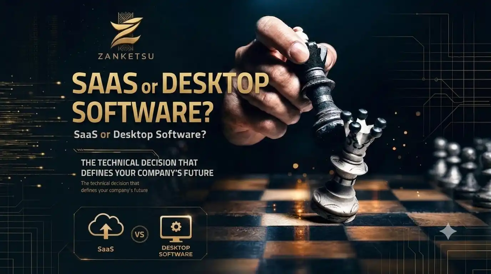

When selecting business software, companies often face a choice between two main models: Cloud Software (SaaS) and traditional Desktop Software installed locally. While local programs may seem familiar and safe to some, the rapid shift towards digital transformation has made cloud solutions the standard choice for companies seeking growth and continuity.
The primary advantage of Cloud Software (SaaS) is access from anywhere at any time. Managers and employees can follow up on work, check reports, and manage operations from their phones or laptops from home or travel, while local software keeps you tied to a specific device inside the office. This flexibility has become critical in today's fast-paced business environment.
The second point is cost and maintenance. Local programs require initial purchase costs, local servers, and continuous technical support to maintain databases and update software. In contrast, SaaS systems operate on a subscription model where the provider handles security, server maintenance, and automatic updates, saving the company significant administrative and technical costs.

The third factor is data security and backup. Many believe local storage is safer, but in reality, local devices are vulnerable to sudden hardware failure, fire, theft, or ransomware attacks that can destroy years of business data. Cloud systems store data on global secure servers with automatic continuous backup, ensuring work continuity under any circumstances.
Therefore, choosing cloud systems is no longer just a technical preference, but a strategic decision affecting the company's ability to compete and survive. Transitioning to SaaS allows businesses to scale operations easily, integrate with other modern tools, and make data-driven decisions based on real-time statistics — which is the key to sustainable success in the modern digital age.
The real difference between those who choose SaaS and those who stick to local software will not appear tomorrow, but will appear after five years. Some companies will find themselves able to open new branches and serve customers in different regions with the same efficiency, while other companies drown in maintenance problems, updates, and difficulty accessing data when they need it most.
Connect with ZANKETSU
Choose the platform or channel you wish to visit